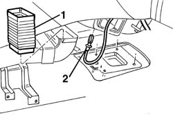
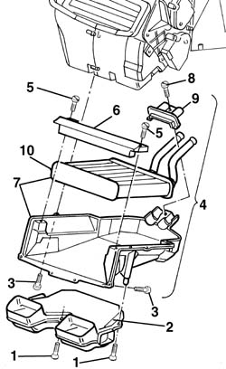
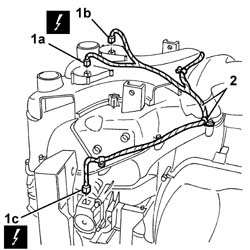
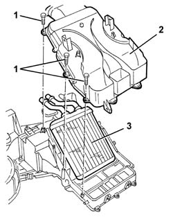
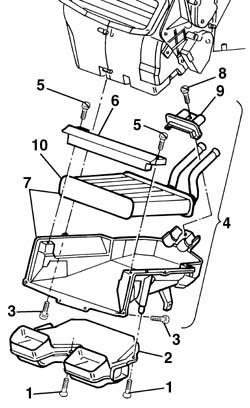

5040C50 air conditioner heater radiator - r+r
- Path
- Procedures > 50 AUXILIARY UNITS > 5040 AIR CONDITIONING CASING AND COMPONENTS > 5040C air conditioner box and components > 5040C50 air conditioner heater radiator - r+r
- Kind
- repair procedure (removal / refitting; the operation number is the code)
- Applies to
- all engines; all production periods
- Interactive page
- https://sloeber94.github.io/elrnDB-a156/en/#/3238337
Applies to: all engines; all production periods; only with equipment: Air Conditioner
 Removing
Removing
 Refitting
Refitting5010A12 engine/heater line - r r
5010A16 heater/engine line - r r
7040A65 passenger compartment box lock , one , r r (left and right sides)
- 5010B44 rear seat air duct - arrange (left and right sides).
1. Disconnect the sleeve.
2. Turn the mixed air temperature sensor and remove.

Applies to: all engines; all production periods; only with equipment: Air Conditioner
1. Unscrew the bolts
2. Remove the shroud.
3. Undo the radiator mount retaining bolts.
4. Lower the mount with the radiator.
5. Unscrew the bolts
6. Remove the beam.
7. Take out the mount and radiator.
8. Unscrew the bolt.
9. Remove the retainer.
10. Remove the radiator from the mount.

Applies to: all engines; all production periods; only with equipment: Air Conditioner
Refitting
RemovingCheck that the radiator is intact, that there are no leaks and that there is no damage or deposits of dirt on the finned surface.
Fit the radiator in the mount.
Refit the retainer and secure with the bolt.
Fit the mount and radiator beneath the facia.
Refit the beam and bolt in place.
Fit the mount and radiator in the seat.
Tighten the radiator mount bolts.
Refit the duct and bolt in place.
Refit the mixed air temperature sensor.
Connect the sleeve
- 5010B44 rear seat air duct - arrange (left and right sides)
7040A65 passenger compartment box lock , one , r r (left and right sides)
Applies to: all engines; production: da 03/02 a 09/03, da 10/03; only with equipment: Air Conditioner
Removing
Refitting7040G24 switch for facia compartment light - r+r
7040G20 facia compartment light bulb holder - r+r
7040A65 passenger compartment box lock , one , r r (left and right sides)
7040L37 gear lever plate - r r
5040D18 air conditioner control unit - r r
7040A25 central facia trim - r r
5560C51 combined analogue control panel - r+r or replace
5010C24 upper air outlet on facia - r r
5010C12 Windscreen demising VENT - R.R.
7040A44 facia lh side cover - r r
7040A45 facia rh side cover - r r
7040A09 passenger air bag compartment cover - r r
5580C22 AIR BAG MODULE - Passenger side - R.R.
5540C18 headlamp/light cluster alignment correction motor switch - r+r
4110A11 steering wheel - r+r for replacement or check for versions with air bag
7040A26 steering column trim - r+r
5550A12 complete stalk unit - r+r for versions with air bag
7040A10 instrument facia trim - r+r
5040C12 air conditioner housing - r r with facia disconnected
1. Disconnect electrical connections (1a), (1b), (1c).
 | Name | Connector |
|---|---|---|
1a | Lower treated air sensor |
| Name | Connector |
|---|---|---|
1b | Lower treated air sensor |
| Name | Connector |
|---|---|---|
1c | Left air mixture flap actuator |
2. Disconnect the cable loom from the lower cover.

Applies to: all engines; production: da 03/02 a 09/03, da 10/03; only with equipment: Air Conditioner
1. Undo the bolts fixing the lower cover.
2. Remove the lower cover.
3. Remove the radiator.

Applies to: all engines; production: da 03/02 a 09/03, da 10/03; only with equipment: Air Conditioner
Refitting
RemovingCheck that the radiator is intact, that there are no leaks and that there is no damage or deposits of dirt on the finned surface.
Position the radiator.
Position the lower cover and fix it using the bolts.
Connect the cable loom to the lower cover.
Connect the electrical connection.
5040C12 air conditioner housing - r r with facia disconnected
7040A10 instrument facia trim - r+r
5550A12 complete stalk unit - r+r for versions with air bag
7040A26 steering column trim - r+r
4110A11 steering wheel - r+r for replacement or check for versions with air bag
5540C18 headlamp/light cluster alignment correction motor switch - r+r
5580C22 AIR BAG MODULE - Passenger side - R.R.
7040A09 passenger air bag compartment cover - r r
7040A45 facia rh side cover - r r
7040A44 facia lh side cover - r r
5010C12 Windscreen demising VENT - R.R.
5010C24 upper air outlet on facia - r r
5560C51 combined analogue control panel - r+r or replace
7040A25 central facia trim - r r
5040D18 air conditioner control unit - r r
7040L37 gear lever plate - r r
7040A65 passenger compartment box lock , one , r r (left and right sides)
Applies to: all engines; all production periods; only with equipment: Right hand drive and Air Conditioner
Removing
Refitting5010A12 engine/heater line - r r
5010A16 heater/engine line - r r
7040A65 passenger compartment box lock , one , r r (right and left).
- 5010B44 rear seat air duct - arrange (right and left).
1. Disconnect the sleeve.
2. Turn the mixed air temperature sensor and remove.
Applies to: all engines; all production periods; only with equipment: Right hand drive and Air Conditioner
1. Undo the bolts.
2. Remove the duct
3. Unscrew the radiator mount bolts
4. Lower the mount and radiator.
5. Undo the bolts.
6. Remove the crossmember
7. Remove the mount and radiator.
8. Undo the bolt.
9. Remove the retainer.
10. Remove the radiator from the mount.

Applies to: all engines; all production periods; only with equipment: Right hand drive and Air Conditioner
Refitting
RemovingCheck that the radiator is intact, that there are no leaks and that there is no damage or deposits of dirt on the finned surface.
Fit the radiator in the mount
Refit the retainer and bolt in place.
Fit the mount and radiator beneath the facia.
Refit the crossmember and bolt in place.
Fit the mount and radiator in its seat.
Tighten the radiator mount bolts.
Fit the shroud and fix it using the bolts.
Refit the mixed air temperature sensor.
Connect the sleeve.
- 5010B44 rear seat air duct - arrange (right and left).
7040A65 passenger compartment box lock , one , r r (right and left).
Topics linked from this page (35)
- 4110A11 steering wheel - r+r for replacement or check for versions with air bag
- 5010A12 engine/heater line - r r
- 5010A16 heater/engine line - r r
- 5010C12 Windscreen demising VENT - R.R.
- 5010C24 upper air outlet on facia - r r
- 5040C12 air conditioner housing - r r with facia disconnected
- 5040D18 air conditioner control unit - r r
- 5540C18 headlamp/light cluster alignment correction motor switch - r+r
- 5550A12 complete stalk unit - r+r for versions with air bag
- 5560b02 kilometre/mileometer - r r
- 5560B03 rev counter - r r
- 5560C51 combined analogue control panel - r+r or replace
- 5560C60 anomaly display - r+r
- 5570T80 car radio unit - r+r
- 5580C air bag system
- 5580C14 air bag ecu - r+r
- 5580C18 air bag module - r+r
- 5580C22 AIR BAG MODULE - Passenger side - R.R.
- 7040A09 passenger air bag compartment cover - r r
- 7040A10 instrument facia trim - r+r
- 7040A25 central facia trim - r r
- 7040A26 steering column trim - r+r
- 7040A31 flap assembly - r r
- 7040A37 fuse box cover - r r
- 7040A44 facia lh side cover - r r
- 7040A45 facia rh side cover - r r
- 7040A65 passenger compartment box lock , one , r r
- 7040G20 facia compartment light bulb holder - r+r
- 7040G24 switch for facia compartment light - r+r
- 7040L20 tunnel trim - r r
- 7040L37 gear lever plate - r r
- 7065C42 ashtray (one) r+r
- K87A Lower treated air sensor ( AIR CONDITIONING )
- K87B Lower treated air sensor ( AIR CONDITIONING )
- N78 Left air mixture flap actuator